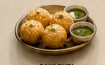
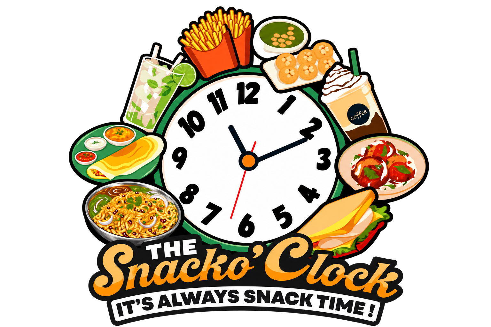
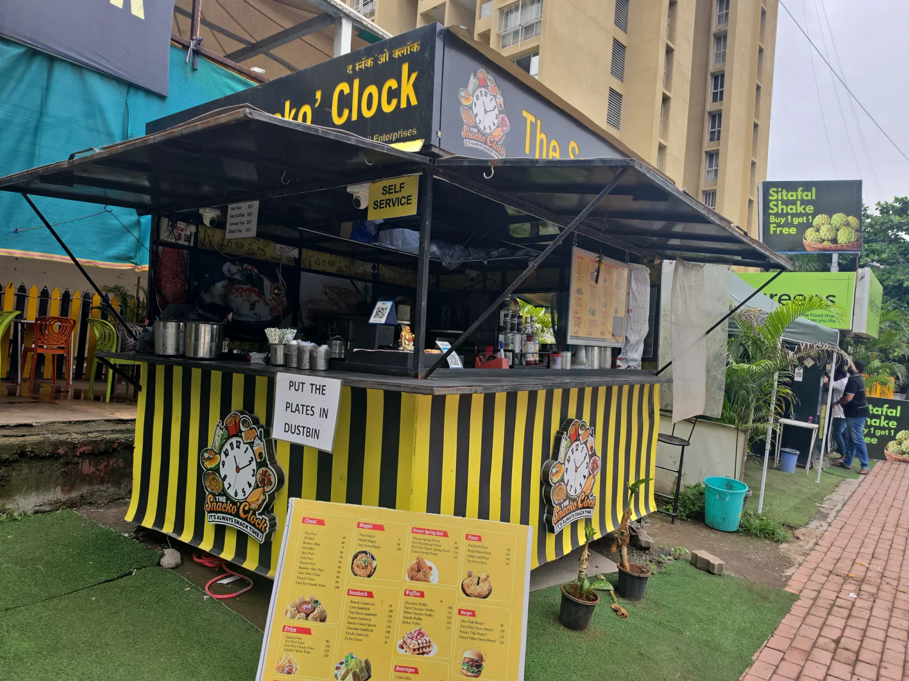
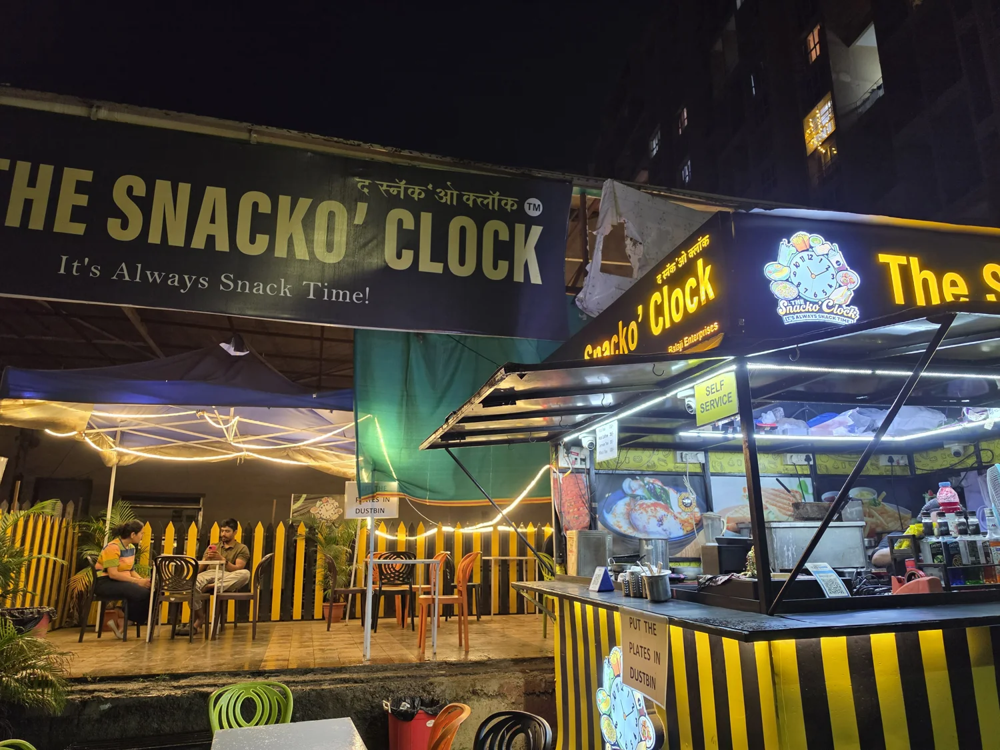

THE STREET CLASSIC

Pani Puri
01A little crunch. A tangy splash. A very happy bite.

Order online ↗YOUR SNACK BREAK, UPGRADED · KHARADI, PUNE
For the chaat cravings. The cheesy cravings. The “just one more bite” cravings. There’s a little happiness for every kind of hungry.
Street-food soul. Café-style comfort.

It’s always
YOUR NEXT “LET’S GRAB A BITE” SPOT.SMALL SPOT. BIG SNACK ENERGY.
A quick bite after work. A catch-up that turns into another round. Or just a very good excuse to take a break.
From street-style chaat to cheesy comfort food, The Snacko’Clock brings your everyday cravings together in one happy little corner of Kharadi.
A taste of our world on Instagram ↗YOUR CRAVINGS HAVE A DESTINATION
Fountain Road, near Ganga Platino
EON Free Zone, Kharadi, Pune · 411014
Planning a visit? Call for current hours and location updates.